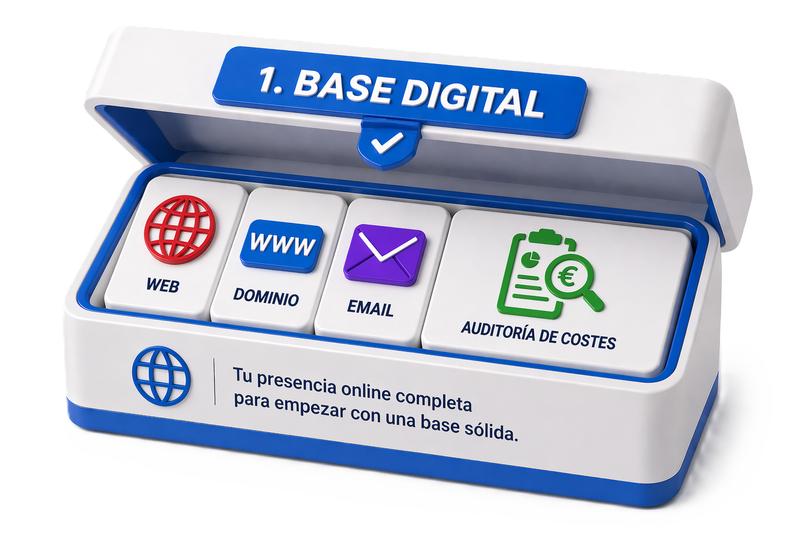
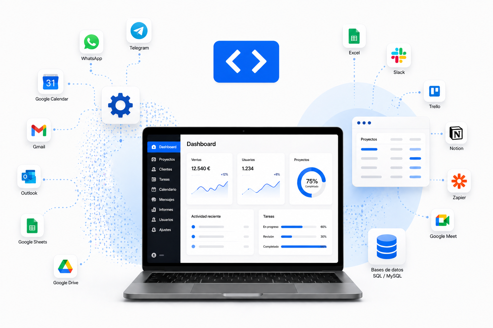

Web y presencia digital
Una web profesional para presentar tu negocio con claridad, transmitir confianza y facilitar el contacto con tus clientes.
Reunimos automatizaciones, comunicación, control interno e integraciones en una sola solución para que tu negocio trabaje mejor, más rápido y con menos fricción.
Nuestro primer paso es auditar los servicios que ya está pagando tu empresa para detectar cuotas sobredimensionadas, herramientas que no usas, gastos duplicados y soluciones que solo necesitas de forma mínima. A partir de ahí, te ayudamos a simplificar, centralizar y abaratar desde el principio, montando además una base digital clara con web profesional, email corporativo y solo lo que de verdad necesitas.

Una web profesional para presentar tu negocio con claridad, transmitir confianza y facilitar el contacto con tus clientes.

Correo profesional, ordenado y preparado para que la comunicación de tu empresa sea clara, fiable y fácil de gestionar.

Estudiamos los servicios que ya está pagando tu empresa para detectar duplicidades, cuotas por encima de lo necesario y herramientas infrautilizadas. La idea es clara: pagar solo por lo que realmente necesitas y abaratar la base digital desde el inicio.

Te acompañamos de forma continua para resolver dudas, revisar decisiones tecnológicas y mantener una dirección clara a medida que tu empresa avanza.
Cuando la base inicial ya está funcionando, estudiamos contigo qué automatizaciones o integraciones tienen sentido. A petición del cliente y con criterio de consultoría, incorporamos solo las que ayuden a reducir tareas repetitivas, ordenar la comunicación y mejorar la operativa diaria.

Reservas, recordatorios, disponibilidad y cambios de cita conectados para reducir llamadas y evitar huecos perdidos.

Lectura de datos, resúmenes, alertas y cuadros de seguimiento para detectar tendencias sin revisar todo manualmente.

Captura tickets, facturas o justificantes, extrae la información importante y ayuda a ordenar el gasto sin copiar datos a mano.

Estados, avisos internos, responsables y comunicaciones para saber qué está pendiente, en curso o entregado.

Mensajes, avisos, respuestas frecuentes y recordatorios conectados con tus formularios, agenda o procesos internos.

Crea flujos automáticos para notificaciones, consultas rápidas y coordinación del equipo.
Gestiona entradas, salidas y reportes de asistencia desde una herramienta clara y centralizada.
Cuando la base digital y las automatizaciones concretas ya se quedan cortas, construimos un software propio alrededor de tu forma real de trabajar: menos datos dispersos, menos pasos repetidos y más control sobre lo que ocurre cada día.
Revisamos la operativa real contigo y tu equipo antes de decidir qué hay que construir.
Localizamos tareas repetitivas, errores, dependencia de personas y puntos donde falta trazabilidad.
Desarrollamos el sistema por fases y lo afinamos contigo hasta que encaje con el día a día.

Empezamos por una base clara, podemos sumar automatizaciones cuando aporten valor y llegamos al desarrollo de software propio cuando tu operativa necesita una solución completa.
Ideal para empresas que quieren una presencia profesional, una estructura básica bien resuelta y una revisión inicial para detectar servicios innecesarios, ajustar cuotas y empezar con criterio desde el primer paso.
Para empresas que ya tienen lo esencial cubierto y quieren automatizar partes concretas de la comunicación, el seguimiento o la gestión diaria.
Para empresas que necesitan dejar atrás Excel, tareas manuales o procesos difíciles de controlar con una herramienta construida alrededor de su operativa.
Antes de hablar de herramientas, hablamos de tu empresa, de tus procesos y de lo que realmente necesitas mejorar. Desde Mérida, acompañamos a empresas de toda Extremadura con una cercanía real que hace que cada solución tenga sentido.
No planteamos soluciones desde la distancia ni con paquetes impersonales. Primero escuchamos, entendemos cómo trabajas y detectamos qué necesita de verdad tu empresa para avanzar con orden.
La tecnología funciona mejor cuando hay una conversación real detrás. Por eso acompañamos cada proyecto de forma directa, con una comunicación clara y decisiones adaptadas a tu día a día, tanto en Mérida como en cualquier punto de Extremadura.
Cada servicio parte de comprender tu situación, tus dudas y el momento real de tu empresa.
No aplicamos una plantilla genérica: ajustamos procesos, canales y automatizaciones a tu forma de trabajar.
Te ayudamos a tomar decisiones con criterio, explicando cada paso para que la tecnología sume de verdad.
En lugar de usar plataformas aisladas, unificamos las tecnologías que tu empresa necesita para vender, comunicar, automatizar y organizar el trabajo diario desde un entorno coherente.